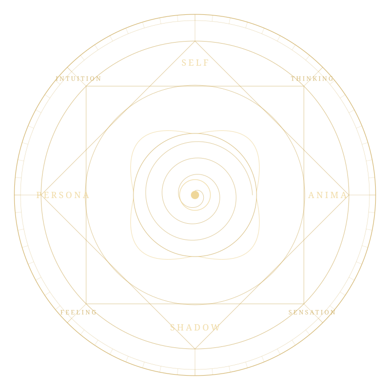

The Persona
The face assembled for the world: profession, manners, the voice used on the telephone. Necessary, and dangerous only when it is mistaken for the whole. Jung's warning is that a well made persona can starve the person wearing it.

Jung's wager was that the images of alchemy, astrology, gnosticism and the grimoires are not failed science. They are the psyche describing itself before it had any other vocabulary.
An archetype, in Jung's late formulation, is not an inherited picture. It is an inherited readiness to form pictures of a certain kind, in the way that a crystal lattice is not the crystal but the rule the crystal obeys. What arrives in a dream is always local: your mother, your street, a particular dog. What repeats across cultures is the shape the local material is poured into.
This distinction does most of the work in the rooms that follow. It lets a reader take the Book of Changes, the Goetia and the Tree of Life seriously as maps of inner territory without having to decide first whether a spirit has a postal address.
The face assembled for the world: profession, manners, the voice used on the telephone. Necessary, and dangerous only when it is mistaken for the whole. Jung's warning is that a well made persona can starve the person wearing it.
Everything incompatible with the persona, pushed out of the light: appetite, cruelty, cowardice, but also unlived talent and refused ambition. The shadow is not evil, it is unintegrated. It returns as accusation, as compulsion, as the neighbour you cannot stop thinking about.
The contrasexual figure, the inner other that carries what the conscious attitude will not own. Encountered first as projection (the fascinating stranger, the maddening authority), then, if the work goes on, as an interior partner one can actually talk to.
Not the ego but the whole, centre and circumference at once. It appears as mandala, as quaternity, as the philosopher's stone, as the child, as the lapis that is "despised and rejected". The ego does not become the Self: it comes into relation with it.
The archetypes of meaning and of origin. Both are double: the mentor who opens a path and the guru who eats his students, the mother who nourishes and the mother who will not let go.
The figure who wrecks the ceremony and thereby restarts the story. In magical literature he is the spirit who answers the question you did not ask. In a life he is usually called an accident.
Jung's typology is not a parlour game of labels. It is a claim about blind spots. Two functions judge (thinking, feeling), two perceive (sensation, intuition); each is directed inward or outward. Whatever function a person leans on hardest, its opposite lives in the shadow and behaves badly there.
The practical consequence: the thinker's feeling is not absent, it is archaic, and it erupts in exactly the places where the thinker is most certain. Ritual, symbol and divination are among the few tools that address the inferior function without arguing with it.
The same structure is why a cast hexagram can land so hard. It speaks in image, which the judging functions cannot immediately discount.
In Psychology and Alchemy and Mysterium Coniunctionis Jung took the alchemical sequence as a description of psychological transformation. The laboratory language is precise once the retort is understood to be a person.
| Operation | In the vessel | In the person |
|---|---|---|
| Nigredo, the blackening | Matter is burned, reduced, putrefies | Depression, disillusion, the collapse of the persona. The first honest look at the shadow. |
| Solutio | The solid is dissolved in water | Rigid positions soften. Feeling returns, often as grief. |
| Separatio | Parts are divided and named | Discrimination: what is mine, what was placed on me, what belongs to the other. |
| Albedo, the whitening | Silver light, the washed matter | Clarity without warmth yet. The anima becomes visible as herself. |
| Coniunctio | The chemical wedding of sun and moon | Opposites held together without collapsing into one another. The transcendent function at work. |
| Rubedo, the reddening | Gold, the stone, the rubied tincture | Integration that shows in conduct, not in insight only. Ordinary life, differently inhabited. |
The order is a literary convention, not a timetable. Practitioners of every school report doing the nigredo repeatedly and out of sequence.
Jung's own technique, and the closest thing in analytical psychology to a ritual practice. One takes an image from a dream or a mood, holds it steadily, lets it move on its own, and then speaks to it rather than about it. The rule that keeps it sane is ethical: whatever the figure says, the ego keeps its own standpoint and answers back.
Compare the magician's scrying and the invocation of a spirit by name. The procedures are close cousins. The disagreement is about ontology, not about technique. See the rites.
Jung's term for a meaningful coincidence with no causal path between its halves. He proposed it, with the physicist Wolfgang Pauli, as an acausal ordering principle, and used it to explain why divination can feel exact.
His foreword to the Wilhelm translation of the I Ching is the key text and the most cautious one: he describes his own results, notes how easily the mind fills gaps, and declines to argue anyone into belief. That foreword is why the Book of Changes reached Western readers as psychology rather than as fortune telling. Continue to room II.
Everything that irritates us about others is an image of something that is unresolved in ourselves. The figure you are most certain about is the figure you have not met. A paraphrase of Jung's standing warning about projection
Where this cabinet uses Jungian language about spirits, kameas and trumps, it is following Jung's own practice of reading occult material psychologically. That is a method, not a verdict: the traditions in rooms III, IV and V each reject it, and their objections are given in their own rooms.